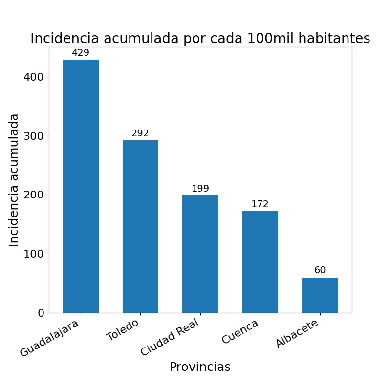

{% extends './comunidades.html'%}
{% block title %} Castilla La Mancha {% endblock %}
{% block body %}
CASTILLA LA MANCHA
{% endblock %}
{% block nombreccaa %}
Castilla La Mancha
{% endblock %}
{% block content0 %}
Contagios totales
{{casos | safe}}
Defunciones totales
{{defunciones | safe}}
Porcentaje contagios
{{porcentaje| safe}} %
{% endblock %}
{% block content1 %}
{{script_casos | safe}}
{{div_casos | safe}}
{{script_hosp | safe}}
{{div_hosp | safe}}
{{script_uci | safe}}
{{div_uci | safe}}
{{script_def | safe}}
{{div_def | safe}}
{% endblock %}
{% block nombreccaa2 %}
Castilla La Mancha
{% endblock %}
{% block imagen_provincias %}

{% endblock %}
{% block num_casos %}
{{num_casos | safe}}
{% endblock %}
{% block num_hosp %}
{{num_hosp | safe}}
{% endblock %}
{% block num_uci %}
{{num_uci | safe}}
{% endblock %}
{% block num_def %}
{{num_def | safe}}
{% endblock %}